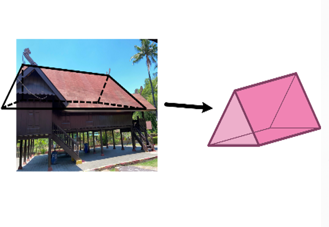

1. Pendahuluan
Matematika sering dipandang sebagai ilmu yang abstrak dan terpisah dari nilai budaya, sehingga pembelajarannya kerap terasa jauh dari kehidupan sehari-hari. Padahal, sejak dahulu masyarakat di berbagai belahan dunia telah menerapkan prinsip-prinsip matematika dalam aktivitas budaya mereka. Kesadaran ini melahirkan etnomatematika, yaitu disiplin yang mempelajari hubungan antara budaya dan konsep matematika dalam kehidupan masyarakat (Ja’faruddin & Naufal, 2024). Menurut Paris dan Wahyuda (2023), etnomatematika berfungsi sebagai jembatan antara kebudayaan dan pendidikan matematika agar konsep-konsep matematika dapat dipahami secara kontekstual.
Salah satu bentuk penerapan etnomatematika tampak pada arsitektur tradisional, seperti Rumah Adat Balla Labbirina di Ujung Pandang, Makassar. Rumah panggung ini memiliki tiga bagian utama—siring, kalle balla, dan pamakang—yang mencerminkan pandangan kosmos masyarakat Makassar tentang tiga lapisan alam: atas, tengah, dan bawah (Nirmalaaziza, 2018; Imriyanti, 2020). Dari sisi matematis, rumah ini menunjukkan penerapan konsep geometri, simetri, dan proporsi. Atap segitiga (timpa’ laja) melambangkan keseimbangan, sedangkan denah persegi empat merepresentasikan konsep Sulapa Appa’, pandangan kosmologis Makassar tentang empat unsur alam: api, air, angin, dan tanah (Putri, Paronda, & Aspikal, 2025).
Namun, arus modernisasi menyebabkan pengetahuan tradisional seperti sistem ukuran dan filosofi rumah adat mulai terabaikan (Al-Faaruuq & Zulkarnain, 2023). Oleh karena itu, kajian etnomatematika terhadap Rumah Adat Balla Labbirina penting dilakukan untuk menelusuri nilai-nilai matematis, budaya, dan kearifan lokal yang terkandung di dalamnya. Melalui pendekatan ini, pembelajaran matematika dapat dibuat lebih kontekstual dan mampu menumbuhkan apresiasi terhadap warisan budaya bangsa (Paris & Wahyuda, 2023).

2. Konsep Matematika dalam Struktur Balla Labbirina Ujung Pandang
Dari Observasi yang dilakukan di Balla Labbirina Ujung Pandang dan hasil kajian literatur, dapat diketahui bahwa Balla Labbirina Ujung Pandang mengandung konsep konsep matematika. Berikut analisis etnomatematika di balla labbirina yang dibagi atas bagian atas (pammakang), bagian tengah(kalle balla) dan bagian bawah (siring).
2.A Atap (timpa’ laja) berbentuk segitiga dan simetri lipat
Segitiga merupakan bangun datar yang memiliki tiga sisi dan tiga sudut, dengan jumlah besar sudutnya selalu 180°. Pada struktur timpa’ laja, dua sisi miring memiliki panjang yang sama dan bertemu di puncak atap, sementara sisi alasnya sejajar dengan lantai rumah. Hal ini menunjukkan penerapan konsep geometri bangun datar, terutama prinsip kesebangunan dan keseimbangan proporsional antar sisi. Selain itu, bentuk atap juga memiliki simetri lipat vertikal, di mana sisi kiri dan kanan merupakan cerminan sempurna terhadap sumbu tengah rumah, memperlihatkan pemahaman alami masyarakat terhadap konsep simetri dalam matematika.
Secara matematis, bentuk segitiga sama kaki pada timpa’ laja dapat digunakan untuk menghitung tinggi atap atau sudut kemiringannya dengan bantuan konsep trigonometri. Misalnya, jika lebar rumah adalah 8 meter dan tinggi atap dari alas ke puncak adalah 3 meter, maka panjang sisi miring (s) dapat dihitung menggunakan teorema Pythagoras:
\[s = \sqrt{4^2 + 3^2} = \sqrt{25} = 5 \text{ meter} \]
Dengan demikian, setiap sisi miring atap memiliki panjang sekitar 5 meter. Selain itu, sudut kemiringan atap (θ) dapat dihitung dengan menggunakan fungsi tangen:
\[ \tan \theta = \frac{\text{tinggi atap}}{\text{setengah lebar rumah}} = \frac{3}{4} \]
Sehingga
\[ \theta = \tan^{-1}\left(\frac{3}{4}\right) \approx 36.9^\circ \]
Hasil ini menunjukkan bahwa timpa’ laja memiliki sudut kemiringan sekitar 37°, yang secara struktural ideal untuk memudahkan aliran air hujan ke sisi atap dan mengurangi tekanan angin di bagian puncak.
2.B Atap (timpa’ laja) berbentuk prisma segitiga

Secara matematis, volume prisma segitiga dapat dihitung menggunakan rumus:
\[ V = L_{\text{alas}} \times t \]
dengan luas segitiga alas dan t adalah panjang rumah (atau tinggi prisma). Jika alas prisma berbentuk segitiga sama kaki dengan lebar rumah 8 meter dan tinggi segitiga 3 meter, maka luas alasnya:
\[ L_{\text{alas}} = \tfrac{1}{2} \times \text{alas} \times \text{tinggi} = \tfrac{1}{2} \times 8 \times 3 = 12\,\text{m}^2 \]
Apabila panjang rumah (tinggi prisma) adalah 10 meter, maka volume prisma segitiga atap dapat dihitung sebagai:
\[ V = 12 \times 10 = 120\,\text{m}^3 \]Artinya, ruang di bawah atap timpa’ laja memiliki volume sekitar 120 meter kubik.
2.C Sambulayang/timba silla sebagai barisan aritmetika
Pada atap Balla Labbirina Ujung Pandang memiliki sambunglayang pada tutup bumbungan depan dan belakang atap. Pada bagian atap, sambunglayang terdiri dari satu, tiga, hingga lima tingkat. Jumlah tingkatan pada sambulayang menunjukkan penerapan konsep barisan aritmetika. Tingkatan ini disusun secara ganjil, yaitu 1,3, dan 5, dengan beda tetap adalah 2. Secara matematis, barisan ini dapat dirumuskan sebagai:
\[ U_n = a + (n - 1)b \]
dengan a=1 dan b=2. Barisan bilangan ganjil tersebut mencerminkan pola pertumbuhan bertingkat yang teratur, dan secara visual menunjukkan proporsi vertikal yang harmonis antara tiap lapisan.2.D Kale Balla berbentuk balok
Secara geometris, bagian tengah rumah adat Balla Labbirina Ujung Pandang yang dikenal sebagai kale balla dapat dimodelkan sebagai bangun ruang balok. Dalam konteks matematika, balok merupakan bangun ruang yang memiliki enam sisi berbentuk persegi panjang, dengan pasangan sisi yang saling sejajar dan kongruen. Balok memiliki panjang (p), lebar (l), dan tinggi (t), dengan rumus luas permukaan dan volume sebagai berikut:
\[ L = 2(pl + pt + lt) \]
\[ V = p \times l \times t \]
Rumus ini menggambarkan bagaimana dimensi ruang kale balla dapat dihitung untuk memperkirakan luas lantai, dinding, maupun volume ruang udara di dalamnya. Misalnya, jika panjang kale balla adalah 10 meter, lebar 8 meter, dan tinggi 4 meter, maka volume ruangnya adalah
\[ V = 10 \times 8 \times 4 = 320\,\text{m}^3 \]
Perhitungan ini dapat membantu memperkirakan kebutuhan material seperti papan dinding dan tiang penyangga, serta menunjukkan penerapan langsung konsep bangun ruang dalam konstruksi tradisional.2.E Pintu dan jendela berbentuk persegi panjang
Pada rumah adat Balla Labbirina Ujung Pandang, pintu dan jendela memiliki bentuk persegi panjang. Secara matematis, persegi panjang merupakan bangun datar segi empat yang memiliki empat sudut siku-siku (masing-masing 90°) dan dua pasang sisi sejajar yang sama panjang. Konsep ini menjadi dasar dalam perancangan arsitektur rumah tradisional karena memberikan stabilitas, keseimbangan, dan kemudahan konstruksi.
Dalam konteks geometri, ukuran persegi panjang ditentukan oleh panjang (p) dan lebar (l), dengan rumus:
\[ L = p \times l \quad \text{dan} \quad K = 2(p + l) \]Sebagai contoh, jika satu jendela memiliki panjang 1,2 meter dan lebar 0,8 meter, maka luasnya adalah
\[ L = 1{,}2 \times 0{,}8 = 0{,}96\,\text{m}^2 \]Dengan empat jendela kongruen, luas total bidang jendela adalah
\[ 4 \times 0{,}96 = 3{,}84\,\text{m}^2 \]Dengan banyaknya bidang persegi panjang pada struktur rumah, perhitungan ini membantu menentukan jumlah dan ukuran bahan bangunan secara efisien, mencerminkan penerapan langsung konsep pengukuran dan perhitungan geometris dalam praktik tradisional.
Selain itu, jendela pada Balla Labbirina memiliki bentuk persegi panjang yang kongruen, artinya setiap jendela memiliki ukuran dan bentuk yang sama, baik dalam panjang maupun lebar. Kesamaan ini mencerminkan penerapan konsep kesebangunan dan kekongruenan dalam geometri. Jarak antarjendela yang sama menunjukkan adanya prinsip proporsi dan keseimbangan dalam rancangan rumah, di mana posisi dan ukuran elemen bangunan diatur secara simetris dan harmonis. Dari segi nilai budaya, keteraturan dan keseimbangan ini menggambarkan pandangan hidup masyarakat Makassar yang menjunjung tinggi tata, harmoni, serta keselarasan antara manusia dan lingkungan.
3. Panorama 360° Tambahan
Jelajahi panorama berikut untuk melihat struktur Balla Labbirina Ujung Pandang dari berbagai sudut pandang.
4. Kesimpulan
Pada rumah adat Balla Labbirina Ujung Pandang, dapat disimpulkan bahwa rumah adat ini mengandung berbagai konsep matematika yang terintegrasi dalam struktur dan desain arsitekturnya. Setiap bagian rumah, seperti pintu, jendela, dan tiang penyangga (passiringan), memperlihatkan penerapan prinsip-prinsip matematika dalam bentuk dan proporsinya. Selain itu, Balla Labbirina Ujung Pandang juga sarat akan nilai-nilai budaya dan makna filosofis yang mencerminkan identitas masyarakat Makassar, seperti status sosial, keseimbangan, kerja keras, serta penghormatan terhadap leluhur dan alam. Dengan demikian, Balla Labbirina Ujung Pandang bukan hanya karya arsitektur tradisional, tetapi juga menjadi bukti nyata hubungan erat antara matematika dan budaya, serta menjadi sumber pembelajaran etnomatematika yang kontekstual dan bermakna.
5. Daftar Pustaka
- Al-Faaruuq, A. M., & Zulkarnain, A. S. (2023). Kearifan Lokal Rumah Tradisional Bugis Baranti di Kabupaten Sidrap. Timpalaja: Jurnal Arsitektur dan Budaya Lokal, UIN Alauddin Makassar.
- Hitam, J. (2023, Desember 22). Lestarikan Adat Budaya, Disbud Kota Makassar Gelar Ritual “Appasili Balla Labbirina Ujung Pandang”. Retrieved from jejakhitam.com
- Ihsan, M. (2019). Makalah Rumah Adat Suku Makassar Balla Labbirina Ujung Pandang. Retrieved from pdfcoffee.com
- Imriyanti. (2020). Akulturasi Arsitektur Tradisional Makassar (disertasi). Repository Universitas Hasanuddin.
- Ja’faruddin, & Naufal, M. A. (2024). Ethnomathematics: Two-Dimensional Figure Geometry Concept in the Balla Lompoa Traditional House in South Sulawesi. osharafa: Jurnal Pendidikan Matematika, Institut Pendidikan Indonesia.
- Nabila, Z. (2025, Juni 26). Menyelami Filosofi Rumah Adat Ujung Pandang. Retrieved from YouTube
- Nirmalaaziza. (2018). Arsitektur dan Budaya. Retrieved from scribd.com
- Pabittei, A., Masrury, M., Arifah, S., & Abbas. (1995). Benteng Somba Opu Sulawesi Selatan. Sulawesi Selatan: Departemen Pendidikan dan Kebudayaan.
- Paris, M. A., & Wahyuda, S. S. (2023). Eksplorasi Etnomatematika pada Rumah Adat Bubungan Tinggi. Jurnal Pendidikan Matematika.
- Putri, M. M., Paronda, N., & Aspikal. (2025). Pemanfaatan Kearifan Lokal Rumah Adat Bugis Sebagai Media Pembelajaran Matematika di Wilayah Desa Tampo. Jurnal Idea Pengabdian Masyarakat, Universitas Muhammadiyah Bone.
- Sulsel, M. (2023, Desember 19). Komitmen Jaga Warisan Budaya, Dinas Kebudayaan Revitalisasi Rumah Adat Ujung Pandang. Retrieved from beritasatu.com
- Yuliani, D. (2023, Desember 21). Perkuat Identitas Budaya, Dinas Kebudayaan Kota Makassar Gelar Ritual Appasili. Retrieved from bukamatanews.id